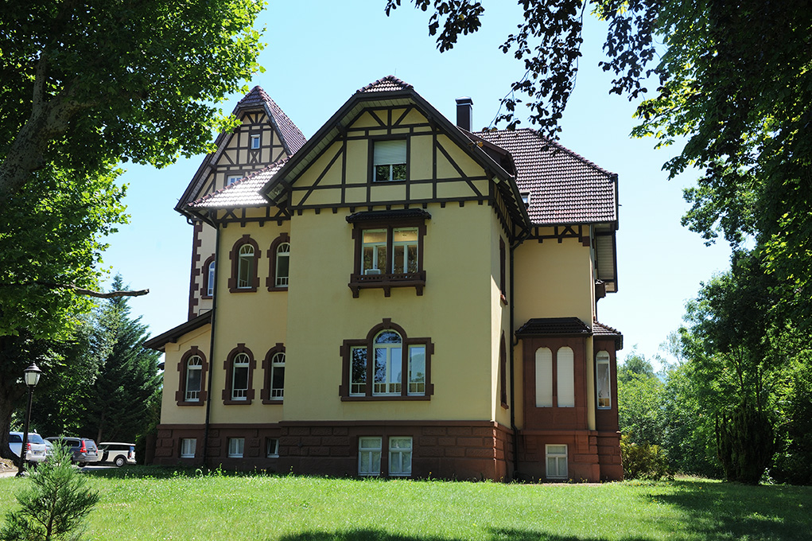
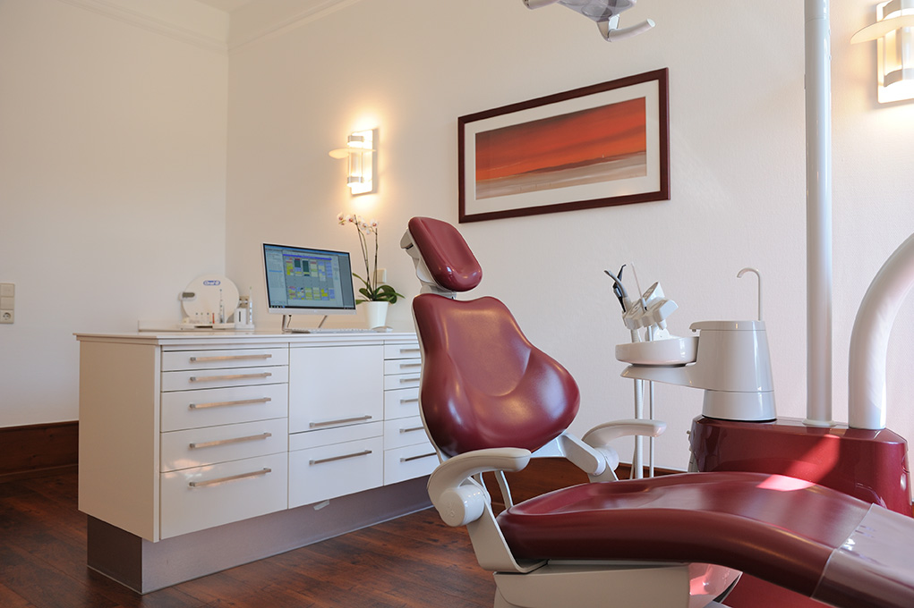
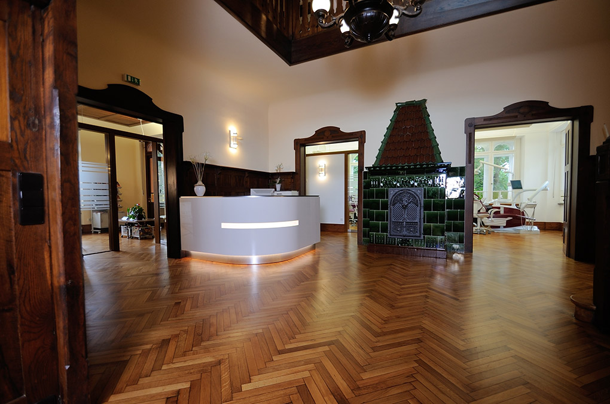

Willkommen in der Zahnarztpraxis
Dr. Horst Weber
Dr. Weber und sein kompetentes Praxisteam freuen sich auf Ihren Besuch
in der Villa St. Konrad.

Unsere Praxis
Unsere moderne Praxis mit eigenem Zahntechniklabor bietet Ihnen allumfassende zahnmedizinische Versorgung und Zahnersatz für schöne und gesunde Zähne. Um Ihre Behandlung so angenehm wie möglich zu gestalten, steht Ihnen ein qualifiziertes Team zur Seite.

Unsere Leistungen
In unserer Praxis finden Sie sämtliche Leistungen der modernen Zahnmedizin wie Professionelle Zahnreinigung (Prophylaxe), Zahnersatz (Prothetik), Implantologie und mehr.

Unsere Sprechzeiten
| Montag - Donnerstag | 07:45 - 19:00 Uhr |
| Freitag | 07:45 - 12:00 Uhr |